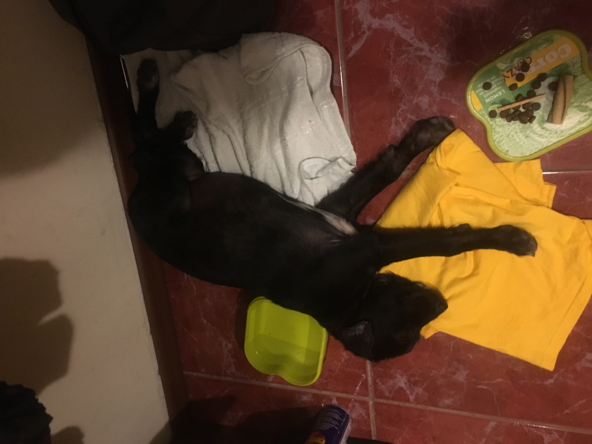

Am stat ceva pe strazi prin Ploiesti, vreo 3 luni cred, pana am gasit niste blocuri cu oameni binevoitori. In primele zile m-am jucat cu niste copii destul de agitati, apoi 2 individe pe care nu le mai vazusem m-au obligat sa merg cu ele in casa. La inceput nu m-am simtit prea bine, toti erau agitati, ma taraiau pe la un medic, ma spalau, imi dadeau pastile si imi faceau injectii, nefericirea se putea citi pe fata mea...
In scurt timp am ajuns intr-o alta casa, prin Bucuresti, o casa cu multi oameni si multe paturi. M-am razbunat. Am facut pipi in toate.
Acum, dupa 2 ani jumatate, pot spune ca i-am dresat pe toti, ma servesc decent, desi mereu e loc de mai bine..